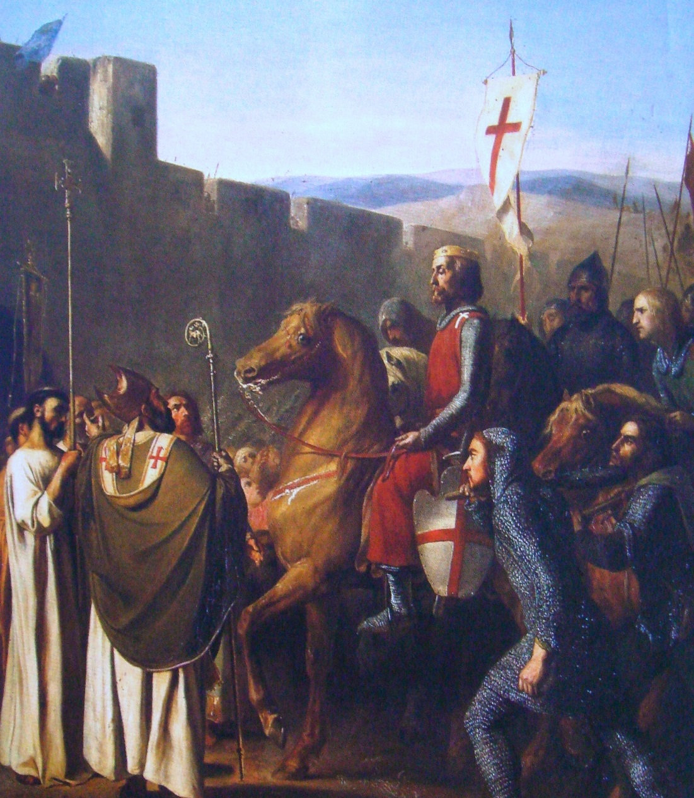

|
Önemli Detaylarıyla Büyük Sefer BAŞLANGIÇBirinci Haçlı Seferi Doğu yolunu tuttuğu sırada temel amaç Kutsal Topraklar'ı fethetmekti. Bizans İmparatorluğu'nun kaybettiği toprakları geri almaya yardımcı olmak ise tali bir amaçtı. Oysa İmparator I. Aleksios Batı'dan askeri yardım talep ettiğinde aklında Anadoulu'nun yeniden fethi için Bizans komutasına girecek paralı askerler ve gönüllüler hayal etmişti. Gelenler ise İmparatorluğa potansiyel bir tehdit oluşturacak cinstendi. Gelenlerin sorun yaratma potansiyelinden korkan ve birkaç komutanın Bizans yerine kendi adına bölgede toprak kazanmaya niyetlendiğinden kısa süre içinde kuşkulanmaya başlayan Aleksios, Haçlıların potansiyelini yararlı bir yöne kanalize etmek üzere siyasi, diplomatik ve askeri yeteneklerini kullandı. Bu çabasında, hiç değilse bir ölçüye kadar, başarılı da oldu. Haçlıları yeniden fetih için planladığı bölgelere yönlendirmek isteyen Aleksios Haçlılara bir teklifte bulundu. Ankara'dan geçen geleneksel haç yolundan vazgeçmeye neredeyse hemen ikna olan Haçlılar, Bizans'ın önerisine uyarak, kurak ve boş arazilerden geçen alışılmadık bir güney rotasını izlediler. Birinci Haçlı Seferi komutanları Bizans'ın siyasi talepleri ile toprak isteklerini gönülsüzce de olsa kabul ettiler. Bazı Haçlılar, İstanbul'daki İmparator'a verilen taahhütleri sadece formaliteden ibaret gibi görmüş olabilir. Resim: Halka Açık - British Library İstanbul'daki siyasi faaliyetlerin sıklıkla ihmal edilen bir yönü de, Bizans ve Fâtımi yönetimleri arasındaki yazışmalardır. Bunlarin metinleri günümüze ulaşmamakla beraber, Halepli tarihçi Azimi, Bizans'ın Haçlı ordusunun gelişine dair haberleri Bizans hükümetinin 1095'te "Müslümanlara" ilettiğini öne sürer. Bahsedilen "Müslümanlar" olsa olsa Fatımiler olabilir. Anadolu Selçukluları, Haçlı birliklerinin İstanbul yakinlarina vardığından kısa sürede haberdar oldular. Haçlıların kendi topraklarını tehdit ettiğini öğrenen Kılıçarslan Dânişmendli rakipleriyle uzlaşma yoluna gitti ve bu iki Türk devleti birleşerek işgalciler üzerine yürüdüler. İznik Kuşatması |
|
| Resim: Halka Açık - Sahibi Belli Değil |
Havalar 1097 başlarinda iyiye gitmeye başladığında, Haçlı müfrezelerinin çoğu Boğaz'ı gemilerle geçerek İstanbul'dan ayrıldı ve Bizans'ın bir süre önce geri almış olduğu Kuzeybatı Anadolu'da, İzmit Körfezi kıyısındaki Pelekanon'da (Maltepe) ordugah kurdu. Ardından, Haçlı müfrezelerinin büyük kısmı Selçuklu topraklarında ilerleyerek 6 Mays 1097 de, kuşatılması amaçlanan İznik'e vardı. Prens Bohemond, Raymond de Toulouse, Robert de Normandie ve Etienne de Blois'nin müfrezeleri de müteakip gün ve haftalarda şehre vardılar. Tatikios komutasindaki Yaklaşık 2.000 askerden oluşan bir Bizans birliği de bunları takviye ediyordu. İkinci bir Bizans kuvveti ise, bir göl kıyısı şehri olan İznik'i tamamen kuşatabilmek için gerekli gemileri sağladi. Sonuçta, İznik dışındaki Haçlı kuvvetlerinin sayisı yaklaşık 4.500 süvari ve 30.000 piyadeye ulaştı. |
|
Malatya'dan yola çıkan ordu, muhtemelen Ankara ve Eskişehir üzerinden gelmişti. Hepsi değilse bile büyğk çoğunluğu atlı olup sürat kazanmaya çalışan bu Türkler, Haçlılar Kuşatma tertibatını tamamlamadan önce gerçekleştirebilecekleri ani bir saldırıyla İznik'i kurtarmayı ümit ediyorlardı. En son intikal ettiği için iyi bir mevki tutmaya fırsat bulamadiğı belli olan Raymond de Toulouse komutasındaki Güney Fransa Provans müfrezesi Türklerin hedefi oldu. Ancak, Godefroy de Bouillon ve Robert de Flandre'in birlikleri İznik' in doğusundan hızla güneye inip Türkleri yandan vurdular. Muharebe, surlar ile ağaçlık tepeler arasında kalan ve Türklere pek az manevra imkânı veren dar bir alanda gerçekleşti. Bunun sonucunda, öldürücü vuruşu boşa çıkan Kılıçarslan ağır zaiyata uğrayarak geri çekildi. Haçlıların morali ise yükselmişti. Sonrasında, Türklerin cesaretini kırmak için kafaları kesilen Türk askerlerinin kesik kelleleri taş fırlatan mancınıklarla İznik surlarının üzerinden şehre atıldılar. Bununla beraber Kılıçarslan'ın daha büyük bir ordu toplamak için geri çekilmesi üzerine savunmacıların umudu iyice kırıldı. Sonradan gelen ilave Haçlı ve Bizans birlikleri ile şehrin garnizonu teslim oldu. İznik gevresinde esir alinan bireok Turk satilmak zere İstanbul'a gönderildi. İçerisinde rehberler ve muhtemelen tercümanlar bulunduğu için öncü kıtaya dahil edilen, 2.000 mevcutlu Tatikios birligi de Anadolu boyu süren büyük yolculukta yer almıştı. Bu durum ayrıca, Robert de Normandie'nin birlikleriyle beraber yürüyüşün başını çeken Prens Bohemond ile Tatikios'u birbirlerine yaklaştırmıştı. Esasen, müfrezeleri arasinda hatrı sayılır mesafeler bulunan Haçlı ordusunu yekpare bir kol saymak da doğru olmaz. Zaten bu durum bir sonraki muharebe üzerinde büyük etki yaratacakti. Kurak ve yüksek Anadolu platosunu sol cenahlarında tutan Haçlılar şimdi Batı ve Güney Anadolu dağlarının eteklerine yakın bir rotada ilerliyorlardı. Bu yol onları, Afyon, Isparta ve Konya arasındaki tuz gölleri ve kuru tuz yataklarından müteşekkil kasvetli bölgelerden geçirecekti. Ancak bundan önce, Kılıçarslan ile müttefiklerinin teşkil ettiği bir diğer ciddi tehdit, pek yanlış isimlendirilmis Dorileon Muharebesinde Haçlıların karşısına çıkacaktı. Eskişehir Pususu |
|
| Resim: Halka Açık - Sahibi Belli Değil |
Haçlıları gölge gibi takip etmiş olan bazı Türklerin ilettiği istihbarat, Kılçarslan'ın geleneksel Türk taktiklerinden yararlanabileceği bir muharebe alanı seçmesini sağlamıştır. Türklerin dizilişi, muhtemelen geleneksel nizama uygun şekilde, merkez ve iki kanattan oluşmaktaydı. Haçlıların öncü kolu, arkalarından gelen ikinci tümenin ve artçıl birliklerin yaklaşık beş kilometre ilerisindeydi. Haçlıların peşindeki küçük bir Türk süvari kuvveti alçak tepelerde mevzilenmiş olabilir. Bu arada Kiliçarslan komutasındaki asıl Türk ordusu, istilacıların Eskişehir'e ilerleyişini durdurmak üzere Nane Vadisi'ni kesecek, ancak Haçlıların görüş menzili dışında kalacak şekilde bir set oluşturmuştur. |
|
Muharebe alanına yaklaşan Haçlı öncü kolu, Türk ordusunu fark ettiğinde bir savunma ordugahı kurma emrini piyadeye veren kişi Prens Bohemond oldu. Savunma nizamına geçilirken Bohemond, süvarilere piyadeyi koruyacak şekilde yerleşmeleri emrini verdi. Aynı esnada, asıl Türk ordusu Haçlı süvarilerine hücum etti ve onları ordugah cevresini koruyan piyadelere doğru gerilemeye zorladı. Foulques de Chartres Türkler için der ki: Türk ordusunun bir kısmı, araları çok açılmış olan Haçlı öncü kıtası ile ikinci kıta arasında ayak sürüyen kitleye, kalan bütün Haçlı ordusu olduklarını zannederek taarruz etti. Godefroy de Bouillon' un tümeni muharebe alanına vardığında Bohemond'un sağında yerleşerek, muhtemelen, Türk kuvvetlerini geri çekilmek ve bir parça sola kaymak mecburiyetinde bıraktı. Bu taaruzun Türk kanadının beklemediği bir anda gerçekleştiği muhakkaktır. Bu kalabalık taaruzun ardından Kılıçarslan'ın ordusu ani bir bozguna uğrayarak kaçtı. Haçlılar kesin sonuçlu bir zafer daha kazanmışlardı. İznik ve Eskişehir'deki Türk yenilgileri, Kılıçarslan'ın taktik hataları ile Haçlıların sayı üstünlüğünün çok büyük olması neticesinde gerçekleşmişti. Haçlı ordusu şimdi, kıraç topraklardan geçerek güney yönünde yürümeye devam etmekteydi. Görüldüğü kadar1yla Dânişmendli ordusu Eskişehir'den sonra kendi bölgesine dönmüştü, Kılıçarslan ise geri çekiliyordu. Haçlı yürüyüşü, bu aşamasında pek az direnişle karşılaşmış görünmektedir. Küçük yerel Türk garnizonlarinin geri gekilmesinin ardından kasaba ve şehirlerin Hıristiyan Rum halkı Haçlılara kapılarını açmıştır. Ağustos ortasında Konya'ya varan Haçlılar dostane karşılandılar ve ne burayı işgal ettiler ne de şehri bir Bizans garnizonuna devrettiler. Zira Konya' yı savunmanın mümkün olmadığını düşünmüş olabilirler. Kılçarslan ise, Haçlılar bölgeyi terk eder etmez, şehri yeni başkenti olarak seçti. Türk direnişi Konya'dan sonra epey artmış, Haçlı ordusu, Konya Ereglisi önlerinde istilacıları pusuya düşürmeye çalışan yerel bir Türk garnizonunu Eylül başında yenilgiye uğratmıştı. Haçlılar Bölünüyor |
|
|  Resim: J.Robert-Fleury, 1840 |
Haçlı Seferi, Konya Ereğlisi'nin doğusunda bölündü. Bu noktada, Baudouin de Boulogne ile Tancrede komutasındaki küçük bir haçlı birliği Kilikya Kapıları Geçidi'nden (Gülek Boğazı) geçerek antik hac yolunu izleyeek şekilde güneye döndü. Haçlı ordusunun geri kalanıyla Tatikios komutasındaki Bizans birlikleri ise, Kuzeydoğu yönünde Kapadokya'ya doğru ilerlemeye başladı. Haçlı ordusu ilerlerken, yerel Ermeni desteğine rağmen, dağlar aşarken müthiş zorluklarla karşılaştılar. Ordudaki zaiyat ile beraber savaş atları ile yük hayvanlarının kaybı tam bir felaketti. Birçok asker yiyecek alabilmek için teçhizatını satmaya çalışıyor, bazıları taşınamayacak kadar ağir olan bu tehçizatları kaldırıp atıyordu. |
|
Maraşlı Ermeniler tarafından gerçekten iyi karşılandılar. Haçlılar Maraş şehhrinin dostluğu, sadece Antakya kuşatmasında değil, Haçlı eyaletlerinin gelecekteki tarihsel gelişimi açısından da stratejik avantaj sağlayacaktı. Bu arada, Kilikya'yı istila eden Haçlılar'ın işi daha kolay olmuş, ayrica Tarsus yakınlarında demirlemiş birkaç korsan gemisi bulmuşlardı. Küçük Haçlı kuvveti Kilikya'daki hareketin ardından doğuya ilerledi. Baudouin de Boulogne, birbiriyle çekişen Urfalı Ermeni hiziplerin birinden aldığı yardım çağrısı üzerine bu şehre hareket etti. 20 Şubat 1098'de Urfa'ya vardi. Baudouin'e çağrida bulunan hizip şehrin hakiminin karşıtıydı ve muhtemelen onların da yardımıyla Mart 1098'de Baudouin ilk Haçlı Urfa Kontu oldu. Haçlılar Suriye'ye ilerlemekteyken Bizans İmparatorluğu bir yandan Anadolu Selçuklu Türkleri ile mücadele halindeydi. Haçlılar Antakya'ya yürümekteyken Türklerin Bizans ile Haçlılar arasındaki lojistik ağını kesmesi üzerine Tatikios kuvvetlerini Antakyadaki Haçlı kuşatmasından çekerek deniz yoluyla İmparator'un yanına desteğe götürdü. Antakya Kuşatması |
|
| Resim: Sébastien Mamerot : le siège d'Antioche |
Seferin bundan sonraki kısmı ve detayları ileride eklenecek!
|

| Birinci Haçlı Seferi | Taraflar Komutanlar Haçlı Seferi Kaynakça İletişim |